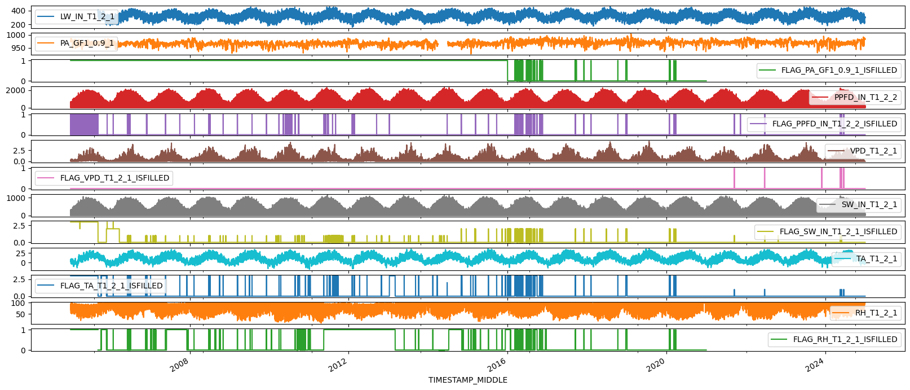
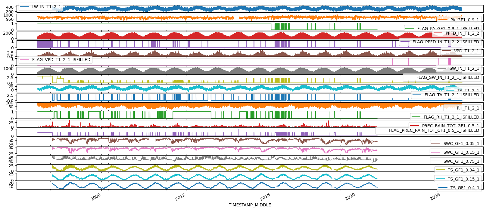
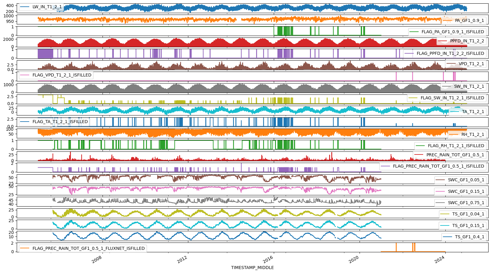
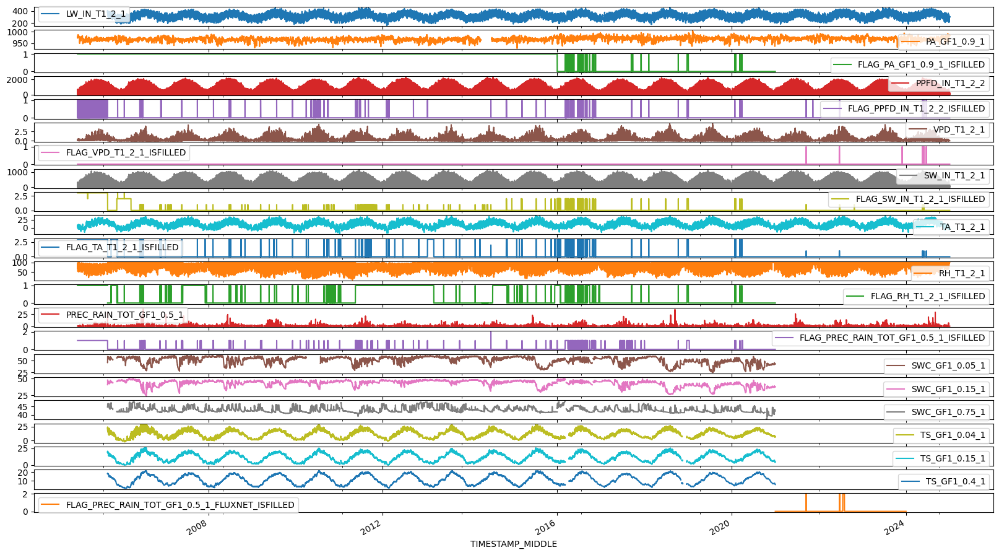
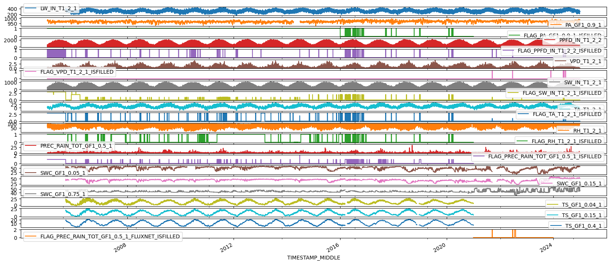
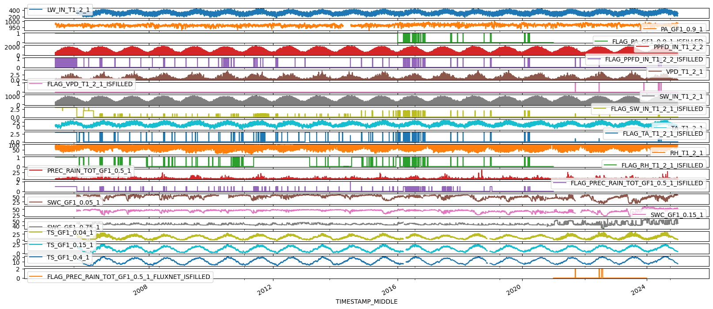
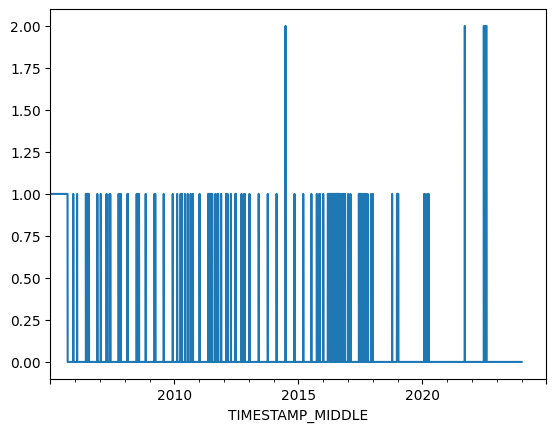
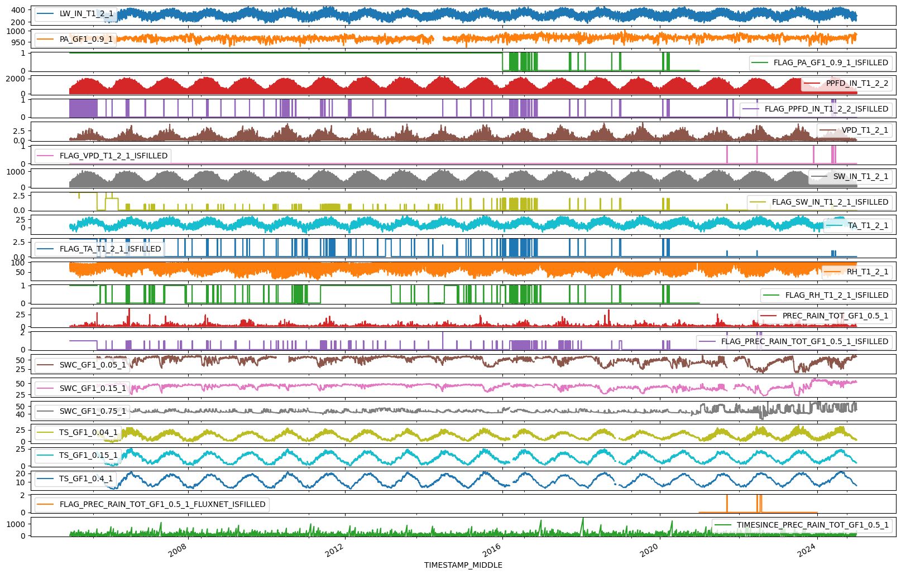

Add additional meteo data#
Collect additional meteo data from various sources:
SWCTSPREC
Imports#
DIRCONF = r'L:\Sync\luhk_work\20 - CODING\22 - POET\configs'
TIMEZONE_OFFSET_TO_UTC_HOURS = 1 # Timezone, e.g. "1" is translated to timezone "UTC+01:00" (CET, winter time)
REQUIRED_TIME_RESOLUTION = '30min' # 30MIN time resolution
from pathlib import Path
import importlib.metadata
import pandas as pd
from dbc_influxdb import dbcInflux
from diive.core.io.files import load_parquet, save_parquet
from diive.core.times.times import TimestampSanitizer
from diive.pkgs.createvar.timesince import TimeSince
from influxdb_client.client.warnings import MissingPivotFunction
import warnings
warnings.filterwarnings(action='ignore', category=MissingPivotFunction)
version_diive = importlib.metadata.version("diive")
print(f"diive version: v{version_diive}")
version_dbc = importlib.metadata.version("dbc_influxdb")
print(f"dbc-influxdb version: v{version_dbc}")
dbc = dbcInflux(dirconf=DIRCONF) # Connect to database
diive version: v0.85.0
dbc-influxdb version: v0.12.0
Reading configuration files was successful.
Connection to database works.
Load meteo data so far (M7)#
meteo7 = load_parquet(filepath="16.1_CH-CHA_meteo7_gapfilled_2005-2024.parquet")
meteo7
Loaded .parquet file 16.1_CH-CHA_meteo7_gapfilled_2005-2024.parquet (0.038 seconds).
--> Detected time resolution of <30 * Minutes> / 30min
| LW_IN_T1_2_1 | PA_GF1_0.9_1 | FLAG_PA_GF1_0.9_1_ISFILLED | PPFD_IN_T1_2_2 | FLAG_PPFD_IN_T1_2_2_ISFILLED | VPD_T1_2_1 | FLAG_VPD_T1_2_1_ISFILLED | SW_IN_T1_2_1 | FLAG_SW_IN_T1_2_1_ISFILLED | TA_T1_2_1 | FLAG_TA_T1_2_1_ISFILLED | RH_T1_2_1 | FLAG_RH_T1_2_1_ISFILLED | |
|---|---|---|---|---|---|---|---|---|---|---|---|---|---|
| TIMESTAMP_MIDDLE | |||||||||||||
| 2005-01-01 00:15:00 | NaN | 978.100000 | 1.0 | 0.0 | 0 | 0.099893 | 0 | 0.0 | 3.0 | 1.566667 | 3.0 | 85.400000 | 1.0 |
| 2005-01-01 00:45:00 | NaN | 977.933333 | 1.0 | 0.0 | 0 | 0.097606 | 0 | 0.0 | 3.0 | 1.533333 | 3.0 | 85.700000 | 1.0 |
| 2005-01-01 01:15:00 | NaN | 977.900000 | 1.0 | 0.0 | 0 | 0.091683 | 0 | 0.0 | 3.0 | 1.566667 | 3.0 | 86.600000 | 1.0 |
| 2005-01-01 01:45:00 | NaN | 977.833333 | 1.0 | 0.0 | 0 | 0.071157 | 0 | 0.0 | 3.0 | 1.566667 | 3.0 | 89.600000 | 1.0 |
| 2005-01-01 02:15:00 | NaN | 977.833333 | 1.0 | 0.0 | 0 | 0.058333 | 0 | 0.0 | 3.0 | 1.500000 | 3.0 | 91.433333 | 1.0 |
| ... | ... | ... | ... | ... | ... | ... | ... | ... | ... | ... | ... | ... | ... |
| 2024-12-31 21:45:00 | 304.613900 | 983.370890 | NaN | 0.0 | 0 | 0.000011 | 0 | 0.0 | 0.0 | -1.919472 | 0.0 | 99.997990 | NaN |
| 2024-12-31 22:15:00 | 303.039890 | 983.052160 | NaN | 0.0 | 0 | 0.000011 | 0 | 0.0 | 0.0 | -2.104678 | 0.0 | 99.997990 | NaN |
| 2024-12-31 22:45:00 | 302.093633 | 982.851140 | NaN | 0.0 | 0 | 0.000011 | 0 | 0.0 | 0.0 | -2.089444 | 0.0 | 99.997990 | NaN |
| 2024-12-31 23:15:00 | 302.217307 | 982.896827 | NaN | 0.0 | 0 | 0.000010 | 0 | 0.0 | 0.0 | -2.355761 | 0.0 | 99.997990 | NaN |
| 2024-12-31 23:45:00 | 298.392973 | 982.856613 | NaN | 0.0 | 0 | 0.000010 | 0 | 0.0 | 0.0 | -2.578839 | 0.0 | 99.997990 | NaN |
350640 rows × 13 columns
Load additional meteo data from Feigenwinter et al. (2023a) (2005-2020)#
Variables:
PRECSWCTS
# Load data from Feigenwinter et al. (2023a)
df_feigenw_2005_2020 = load_parquet(filepath="13.1_CH-CHA_FEIGENW_meteo_2005-2020.parquet")
keepcols = [
'PREC_RAIN_TOT_GF1_0.5_1',
'FLAG_PREC_RAIN_TOT_GF1_0.5_1_ISFILLED',
'SWC_GF1_0.05_1',
'SWC_GF1_0.15_1',
'SWC_GF1_0.75_1',
'TS_GF1_0.04_1',
'TS_GF1_0.15_1',
'TS_GF1_0.4_1'
]
df_feigenw_2005_2020 = df_feigenw_2005_2020[keepcols].copy()
df_feigenw_2005_2020
Loaded .parquet file 13.1_CH-CHA_FEIGENW_meteo_2005-2020.parquet (0.020 seconds).
--> Detected time resolution of <30 * Minutes> / 30min
| PREC_RAIN_TOT_GF1_0.5_1 | FLAG_PREC_RAIN_TOT_GF1_0.5_1_ISFILLED | SWC_GF1_0.05_1 | SWC_GF1_0.15_1 | SWC_GF1_0.75_1 | TS_GF1_0.04_1 | TS_GF1_0.15_1 | TS_GF1_0.4_1 | |
|---|---|---|---|---|---|---|---|---|
| TIMESTAMP_MIDDLE | ||||||||
| 2005-01-01 00:15:00 | 0.0 | 1.0 | NaN | NaN | NaN | NaN | NaN | NaN |
| 2005-01-01 00:45:00 | 0.0 | 1.0 | NaN | NaN | NaN | NaN | NaN | NaN |
| 2005-01-01 01:15:00 | 0.1 | 1.0 | NaN | NaN | NaN | NaN | NaN | NaN |
| 2005-01-01 01:45:00 | 0.0 | 1.0 | NaN | NaN | NaN | NaN | NaN | NaN |
| 2005-01-01 02:15:00 | 0.1 | 1.0 | NaN | NaN | NaN | NaN | NaN | NaN |
| ... | ... | ... | ... | ... | ... | ... | ... | ... |
| 2020-12-31 21:45:00 | 0.0 | 0.0 | 43.15512 | 37.83649 | 42.34799 | 7.059905 | 4.751553 | 5.665280 |
| 2020-12-31 22:15:00 | 0.0 | 0.0 | 43.14826 | 37.83116 | 42.34475 | 7.037867 | 4.753286 | 5.666638 |
| 2020-12-31 22:45:00 | 0.0 | 0.0 | 43.14190 | 37.82694 | 42.34330 | 7.021161 | 4.754451 | 5.668180 |
| 2020-12-31 23:15:00 | 0.0 | 0.0 | 43.13696 | 37.82402 | 42.34280 | 6.998506 | 4.753085 | 5.669790 |
| 2020-12-31 23:45:00 | 0.0 | 0.0 | 43.13130 | 37.82018 | 42.30388 | 6.990282 | 4.749334 | 5.671485 |
280512 rows × 8 columns
Load meteo data from FLUXNET v2024 (2021-2023)#
Variables:
PREC
%%time
df_fluxnet_prec_2021_2023, data_detailed_fluxnet, assigned_measurements_fluxnet = dbc.download(
bucket=f'ch-cha_processed',
measurements=['PREC'],
fields=['PREC_F', 'PREC_F_QC'],
start='2021-01-01 00:00:01', # Download data starting with this date (the start date itself IS included),
stop='2024-01-01 00:00:01', # Download data before this date (the stop date itself IS NOT included),
timezone_offset_to_utc_hours=TIMEZONE_OFFSET_TO_UTC_HOURS,
data_version='fluxnet_v2024'
)
DOWNLOADING
from bucket ch-cha_processed
variables ['PREC_F', 'PREC_F_QC']
from measurements ['PREC']
from data version fluxnet_v2024
between 2021-01-01 00:00:01 and 2024-01-01 00:00:01
with timezone offset to UTC of 1
Used querystring: from(bucket: "ch-cha_processed") |> range(start: 2021-01-01T00:00:01+01:00, stop: 2024-01-01T00:00:01+01:00) |> filter(fn: (r) => r["_measurement"] == "PREC") |> filter(fn: (r) => r["data_version"] == "fluxnet_v2024") |> filter(fn: (r) => r["_field"] == "PREC_F" or r["_field"] == "PREC_F_QC") |> pivot(rowKey:["_time"], columnKey: ["_field"], valueColumn: "_value")
querystring was constructed from:
bucketstring: from(bucket: "ch-cha_processed")
rangestring: |> range(start: 2021-01-01T00:00:01+01:00, stop: 2024-01-01T00:00:01+01:00)
measurementstring: |> filter(fn: (r) => r["_measurement"] == "PREC")
dataversionstring: |> filter(fn: (r) => r["data_version"] == "fluxnet_v2024")
fieldstring: |> filter(fn: (r) => r["_field"] == "PREC_F" or r["_field"] == "PREC_F_QC")
pivotstring: |> pivot(rowKey:["_time"], columnKey: ["_field"], valueColumn: "_value")
Download finished.
Downloaded data for 2 variables:
<-- PREC_F (52560 records) first date: 2021-01-01 00:30:00 last date: 2024-01-01 00:00:00
<-- PREC_F_QC (52560 records) first date: 2021-01-01 00:30:00 last date: 2024-01-01 00:00:00
========================================
Fields in measurement PREC of bucket ch-cha_processed:
#1 ch-cha_processed PREC PREC
#2 ch-cha_processed PREC PREC_ERA
#3 ch-cha_processed PREC PREC_F
#4 ch-cha_processed PREC PREC_F_QC
#5 ch-cha_processed PREC PREC_RAIN
#6 ch-cha_processed PREC PREC_RAIN_SOURCE
#7 ch-cha_processed PREC PREC_RAIN_TOT_GF1_0.5_1
#8 ch-cha_processed PREC PREC_TOT_M1_1_1
#9 ch-cha_processed PREC P_RAIN_TOT_GF1_0.5_1
#10 ch-cha_processed PREC P_RAIN_TOT_M1_1_1
Found 10 fields in measurement PREC of bucket ch-cha_processed.
========================================
CPU times: total: 1.56 s
Wall time: 2.45 s
df_fluxnet_prec_2021_2023
| PREC_F | PREC_F_QC | |
|---|---|---|
| TIMESTAMP_END | ||
| 2021-01-01 00:30:00 | 0.0 | 0.0 |
| 2021-01-01 01:00:00 | 0.0 | 0.0 |
| 2021-01-01 01:30:00 | 0.0 | 0.0 |
| 2021-01-01 02:00:00 | 0.0 | 0.0 |
| 2021-01-01 02:30:00 | 0.0 | 0.0 |
| ... | ... | ... |
| 2023-12-31 22:00:00 | 0.0 | 0.0 |
| 2023-12-31 22:30:00 | 0.0 | 0.0 |
| 2023-12-31 23:00:00 | 0.0 | 0.0 |
| 2023-12-31 23:30:00 | 0.0 | 0.0 |
| 2024-01-01 00:00:00 | 0.0 | 0.0 |
52560 rows × 2 columns
Sanitize timestamp#
df_fluxnet_prec_2021_2023 = TimestampSanitizer(data=df_fluxnet_prec_2021_2023, output_middle_timestamp=True).get()
df_fluxnet_prec_2021_2023
| PREC_F | PREC_F_QC | |
|---|---|---|
| TIMESTAMP_MIDDLE | ||
| 2021-01-01 00:15:00 | 0.0 | 0.0 |
| 2021-01-01 00:45:00 | 0.0 | 0.0 |
| 2021-01-01 01:15:00 | 0.0 | 0.0 |
| 2021-01-01 01:45:00 | 0.0 | 0.0 |
| 2021-01-01 02:15:00 | 0.0 | 0.0 |
| ... | ... | ... |
| 2023-12-31 21:45:00 | 0.0 | 0.0 |
| 2023-12-31 22:15:00 | 0.0 | 0.0 |
| 2023-12-31 22:45:00 | 0.0 | 0.0 |
| 2023-12-31 23:15:00 | 0.0 | 0.0 |
| 2023-12-31 23:45:00 | 0.0 | 0.0 |
52560 rows × 2 columns
Load meteo data from database, screened with diive (2021-2024)#
Variables:
PREC(2024)SWCTS
%%time
df_diive_2021_2024, data_detailed, assigned_measurements = dbc.download(
bucket=f'ch-cha_processed',
measurements=['SWC', 'TS', 'PREC'],
fields=[
'SWC_GF1_0.05_1',
'SWC_GF1_0.15_1',
'SWC_GF1_0.2_1',
'SWC_LOWRES_GF1_0.75_3',
'TS_LOWRES_GF1_0.05_3',
'TS_LOWRES_GF1_0.2_3',
'TS_LOWRES_GF1_0.4_3',
'PREC_RAIN_TOT_GF1_0.5_1'
],
start='2021-01-01 00:00:01', # Download data starting with this date (the start date itself IS included),
stop='2025-01-01 00:00:01', # Download data before this date (the stop date itself IS NOT included),
timezone_offset_to_utc_hours=TIMEZONE_OFFSET_TO_UTC_HOURS,
data_version='meteoscreening_diive'
)
DOWNLOADING
from bucket ch-cha_processed
variables ['SWC_GF1_0.05_1', 'SWC_GF1_0.15_1', 'SWC_GF1_0.2_1', 'SWC_LOWRES_GF1_0.75_3', 'TS_LOWRES_GF1_0.05_3', 'TS_LOWRES_GF1_0.2_3', 'TS_LOWRES_GF1_0.4_3', 'PREC_RAIN_TOT_GF1_0.5_1']
from measurements ['SWC', 'TS', 'PREC']
from data version meteoscreening_diive
between 2021-01-01 00:00:01 and 2025-01-01 00:00:01
with timezone offset to UTC of 1
Used querystring: from(bucket: "ch-cha_processed") |> range(start: 2021-01-01T00:00:01+01:00, stop: 2025-01-01T00:00:01+01:00) |> filter(fn: (r) => r["_measurement"] == "SWC" or r["_measurement"] == "TS" or r["_measurement"] == "PREC") |> filter(fn: (r) => r["data_version"] == "meteoscreening_diive") |> filter(fn: (r) => r["_field"] == "SWC_GF1_0.05_1" or r["_field"] == "SWC_GF1_0.15_1" or r["_field"] == "SWC_GF1_0.2_1" or r["_field"] == "SWC_LOWRES_GF1_0.75_3" or r["_field"] == "TS_LOWRES_GF1_0.05_3" or r["_field"] == "TS_LOWRES_GF1_0.2_3" or r["_field"] == "TS_LOWRES_GF1_0.4_3" or r["_field"] == "PREC_RAIN_TOT_GF1_0.5_1") |> pivot(rowKey:["_time"], columnKey: ["_field"], valueColumn: "_value")
querystring was constructed from:
bucketstring: from(bucket: "ch-cha_processed")
rangestring: |> range(start: 2021-01-01T00:00:01+01:00, stop: 2025-01-01T00:00:01+01:00)
measurementstring: |> filter(fn: (r) => r["_measurement"] == "SWC" or r["_measurement"] == "TS" or r["_measurement"] == "PREC")
dataversionstring: |> filter(fn: (r) => r["data_version"] == "meteoscreening_diive")
fieldstring: |> filter(fn: (r) => r["_field"] == "SWC_GF1_0.05_1" or r["_field"] == "SWC_GF1_0.15_1" or r["_field"] == "SWC_GF1_0.2_1" or r["_field"] == "SWC_LOWRES_GF1_0.75_3" or r["_field"] == "TS_LOWRES_GF1_0.05_3" or r["_field"] == "TS_LOWRES_GF1_0.2_3" or r["_field"] == "TS_LOWRES_GF1_0.4_3" or r["_field"] == "PREC_RAIN_TOT_GF1_0.5_1")
pivotstring: |> pivot(rowKey:["_time"], columnKey: ["_field"], valueColumn: "_value")
Download finished.
Downloaded data for 8 variables:
<-- PREC_RAIN_TOT_GF1_0.5_1 (17555 records) first date: 2024-01-01 00:30:00 last date: 2025-01-01 00:00:00
<-- SWC_GF1_0.2_1 (54711 records) first date: 2021-11-17 13:30:00 last date: 2025-01-01 00:00:00
<-- SWC_GF1_0.15_1 (12363 records) first date: 2021-01-01 00:30:00 last date: 2021-09-15 13:30:00
<-- SWC_GF1_0.05_1 (67073 records) first date: 2021-01-01 00:30:00 last date: 2025-01-01 00:00:00
<-- SWC_LOWRES_GF1_0.75_3 (70030 records) first date: 2021-01-01 00:30:00 last date: 2025-01-01 00:00:00
<-- TS_LOWRES_GF1_0.05_3 (70037 records) first date: 2021-01-01 00:30:00 last date: 2025-01-01 00:00:00
<-- TS_LOWRES_GF1_0.2_3 (70036 records) first date: 2021-01-01 00:30:00 last date: 2025-01-01 00:00:00
<-- TS_LOWRES_GF1_0.4_3 (70031 records) first date: 2021-01-01 00:30:00 last date: 2025-01-01 00:00:00
========================================
Fields in measurement SWC of bucket ch-cha_processed:
#1 ch-cha_processed SWC SWC_0.05
#2 ch-cha_processed SWC SWC_0.15
#3 ch-cha_processed SWC SWC_0.75
#4 ch-cha_processed SWC SWC_F_MDS_1
#5 ch-cha_processed SWC SWC_F_MDS_1_QC
#6 ch-cha_processed SWC SWC_F_MDS_2
#7 ch-cha_processed SWC SWC_F_MDS_2_QC
#8 ch-cha_processed SWC SWC_F_MDS_3
#9 ch-cha_processed SWC SWC_F_MDS_3_QC
#10 ch-cha_processed SWC SWC_F_MDS_4
#11 ch-cha_processed SWC SWC_F_MDS_4_QC
#12 ch-cha_processed SWC SWC_F_MDS_5
#13 ch-cha_processed SWC SWC_F_MDS_5_QC
#14 ch-cha_processed SWC SWC_F_MDS_6
#15 ch-cha_processed SWC SWC_F_MDS_6_QC
#16 ch-cha_processed SWC SWC_F_MDS_7
#17 ch-cha_processed SWC SWC_F_MDS_7_QC
#18 ch-cha_processed SWC SWC_F_MDS_8
#19 ch-cha_processed SWC SWC_F_MDS_8_QC
#20 ch-cha_processed SWC SWC_F_MDS_9
#21 ch-cha_processed SWC SWC_F_MDS_9_QC
#22 ch-cha_processed SWC SWC_GF1_0.05_1
#23 ch-cha_processed SWC SWC_GF1_0.05_2
#24 ch-cha_processed SWC SWC_GF1_0.05_3
#25 ch-cha_processed SWC SWC_GF1_0.15_1
#26 ch-cha_processed SWC SWC_GF1_0.1_1
#27 ch-cha_processed SWC SWC_GF1_0.1_2
#28 ch-cha_processed SWC SWC_GF1_0.1_3
#29 ch-cha_processed SWC SWC_GF1_0.25_1
#30 ch-cha_processed SWC SWC_GF1_0.2_1
#31 ch-cha_processed SWC SWC_GF1_0.2_2
#32 ch-cha_processed SWC SWC_GF1_0.2_3
#33 ch-cha_processed SWC SWC_GF1_0.3_1
#34 ch-cha_processed SWC SWC_GF1_0.3_2
#35 ch-cha_processed SWC SWC_GF1_0.3_3
#36 ch-cha_processed SWC SWC_GF1_0.4_1
#37 ch-cha_processed SWC SWC_GF1_0.4_3
#38 ch-cha_processed SWC SWC_GF1_0.5_1
#39 ch-cha_processed SWC SWC_GF1_0.5_2
#40 ch-cha_processed SWC SWC_GF1_0.5_3
#41 ch-cha_processed SWC SWC_GF1_0.6_3
#42 ch-cha_processed SWC SWC_GF1_0.75_1
#43 ch-cha_processed SWC SWC_GF1_0.75_3
#44 ch-cha_processed SWC SWC_GF1_1_3
#45 ch-cha_processed SWC SWC_GF4_0.05_1
#46 ch-cha_processed SWC SWC_GF4_0.05_1.1
#47 ch-cha_processed SWC SWC_GF4_0.05_2
#48 ch-cha_processed SWC SWC_GF4_0.05_2.1
#49 ch-cha_processed SWC SWC_GF4_0.05_3
#50 ch-cha_processed SWC SWC_GF4_0.05_4
#51 ch-cha_processed SWC SWC_GF4_0.05_5
#52 ch-cha_processed SWC SWC_GF4_0.1_1
#53 ch-cha_processed SWC SWC_GF4_0.1_2
#54 ch-cha_processed SWC SWC_GF4_0.1_2.1
#55 ch-cha_processed SWC SWC_GF4_0.1_3
#56 ch-cha_processed SWC SWC_GF4_0.1_4
#57 ch-cha_processed SWC SWC_GF4_0.1_5
#58 ch-cha_processed SWC SWC_GF4_0.2_1
#59 ch-cha_processed SWC SWC_GF4_0.2_2
#60 ch-cha_processed SWC SWC_GF4_0.3_4
#61 ch-cha_processed SWC SWC_GF4_0.3_5
#62 ch-cha_processed SWC SWC_GF4_0.5_4
#63 ch-cha_processed SWC SWC_GF4_0.5_5
#64 ch-cha_processed SWC SWC_GF4_1_1
#65 ch-cha_processed SWC SWC_GF5_0.05_1
#66 ch-cha_processed SWC SWC_GF5_0.05_1.1
#67 ch-cha_processed SWC SWC_GF5_0.05_2
#68 ch-cha_processed SWC SWC_GF5_0.05_2.1
#69 ch-cha_processed SWC SWC_GF5_0.05_3
#70 ch-cha_processed SWC SWC_GF5_0.05_4
#71 ch-cha_processed SWC SWC_GF5_0.1_1
#72 ch-cha_processed SWC SWC_GF5_0.1_1.1
#73 ch-cha_processed SWC SWC_GF5_0.1_2
#74 ch-cha_processed SWC SWC_GF5_0.1_2.1
#75 ch-cha_processed SWC SWC_GF5_0.1_3
#76 ch-cha_processed SWC SWC_GF5_0.1_4
#77 ch-cha_processed SWC SWC_GF5_0.2_2
#78 ch-cha_processed SWC SWC_LOWRES_GF1_0.75_3
Found 78 fields in measurement SWC of bucket ch-cha_processed.
========================================
========================================
Fields in measurement TS of bucket ch-cha_processed:
#1 ch-cha_processed TS TS_0.04
#2 ch-cha_processed TS TS_0.15
#3 ch-cha_processed TS TS_0.4
#4 ch-cha_processed TS TS_AVG_GF1_0.025_2
#5 ch-cha_processed TS TS_AVG_GF1_1_3
#6 ch-cha_processed TS TS_F_MDS_1
#7 ch-cha_processed TS TS_F_MDS_10
#8 ch-cha_processed TS TS_F_MDS_10_QC
#9 ch-cha_processed TS TS_F_MDS_11
#10 ch-cha_processed TS TS_F_MDS_11_QC
#11 ch-cha_processed TS TS_F_MDS_12
#12 ch-cha_processed TS TS_F_MDS_12_QC
#13 ch-cha_processed TS TS_F_MDS_13
#14 ch-cha_processed TS TS_F_MDS_13_QC
#15 ch-cha_processed TS TS_F_MDS_14
#16 ch-cha_processed TS TS_F_MDS_14_QC
#17 ch-cha_processed TS TS_F_MDS_1_QC
#18 ch-cha_processed TS TS_F_MDS_2
#19 ch-cha_processed TS TS_F_MDS_2_QC
#20 ch-cha_processed TS TS_F_MDS_3
#21 ch-cha_processed TS TS_F_MDS_3_QC
#22 ch-cha_processed TS TS_F_MDS_4
#23 ch-cha_processed TS TS_F_MDS_4_QC
#24 ch-cha_processed TS TS_F_MDS_5
#25 ch-cha_processed TS TS_F_MDS_5_QC
#26 ch-cha_processed TS TS_F_MDS_6
#27 ch-cha_processed TS TS_F_MDS_6_QC
#28 ch-cha_processed TS TS_F_MDS_7
#29 ch-cha_processed TS TS_F_MDS_7_QC
#30 ch-cha_processed TS TS_F_MDS_8
#31 ch-cha_processed TS TS_F_MDS_8_QC
#32 ch-cha_processed TS TS_F_MDS_9
#33 ch-cha_processed TS TS_F_MDS_9_QC
#34 ch-cha_processed TS TS_GF1_0.01_1
#35 ch-cha_processed TS TS_GF1_0.01_2
#36 ch-cha_processed TS TS_GF1_0.025_2
#37 ch-cha_processed TS TS_GF1_0.02_1
#38 ch-cha_processed TS TS_GF1_0.04_1
#39 ch-cha_processed TS TS_GF1_0.05_1
#40 ch-cha_processed TS TS_GF1_0.05_2
#41 ch-cha_processed TS TS_GF1_0.05_3
#42 ch-cha_processed TS TS_GF1_0.07_1
#43 ch-cha_processed TS TS_GF1_0.15_1
#44 ch-cha_processed TS TS_GF1_0.1_1
#45 ch-cha_processed TS TS_GF1_0.1_2
#46 ch-cha_processed TS TS_GF1_0.1_3
#47 ch-cha_processed TS TS_GF1_0.25_1
#48 ch-cha_processed TS TS_GF1_0.2_1
#49 ch-cha_processed TS TS_GF1_0.2_2
#50 ch-cha_processed TS TS_GF1_0.2_3
#51 ch-cha_processed TS TS_GF1_0.3_1
#52 ch-cha_processed TS TS_GF1_0.3_2
#53 ch-cha_processed TS TS_GF1_0.3_3
#54 ch-cha_processed TS TS_GF1_0.4_1
#55 ch-cha_processed TS TS_GF1_0.4_3
#56 ch-cha_processed TS TS_GF1_0.5_1
#57 ch-cha_processed TS TS_GF1_0.5_2
#58 ch-cha_processed TS TS_GF1_0.5_3
#59 ch-cha_processed TS TS_GF1_0.6_3
#60 ch-cha_processed TS TS_GF1_0.75_3
#61 ch-cha_processed TS TS_GF1_0.95_1
#62 ch-cha_processed TS TS_GF1_1_3
#63 ch-cha_processed TS TS_GF4_0.05_1
#64 ch-cha_processed TS TS_GF4_0.05_1.1
#65 ch-cha_processed TS TS_GF4_0.05_2
#66 ch-cha_processed TS TS_GF4_0.05_2.1
#67 ch-cha_processed TS TS_GF4_0.05_3
#68 ch-cha_processed TS TS_GF4_0.05_4
#69 ch-cha_processed TS TS_GF4_0.05_5
#70 ch-cha_processed TS TS_GF4_0.1_1
#71 ch-cha_processed TS TS_GF4_0.1_1.1
#72 ch-cha_processed TS TS_GF4_0.1_2
#73 ch-cha_processed TS TS_GF4_0.1_2.1
#74 ch-cha_processed TS TS_GF4_0.1_3
#75 ch-cha_processed TS TS_GF4_0.1_4
#76 ch-cha_processed TS TS_GF4_0.1_5
#77 ch-cha_processed TS TS_GF4_0.2_1
#78 ch-cha_processed TS TS_GF4_0.2_2
#79 ch-cha_processed TS TS_GF4_0.3_4
#80 ch-cha_processed TS TS_GF4_0.3_5
#81 ch-cha_processed TS TS_GF4_0.5_1
#82 ch-cha_processed TS TS_GF4_0.5_4
#83 ch-cha_processed TS TS_GF4_0.5_5
#84 ch-cha_processed TS TS_GF4_1_1
#85 ch-cha_processed TS TS_GF5_0.05_1
#86 ch-cha_processed TS TS_GF5_0.05_1.1
#87 ch-cha_processed TS TS_GF5_0.05_2
#88 ch-cha_processed TS TS_GF5_0.05_2.1
#89 ch-cha_processed TS TS_GF5_0.05_3
#90 ch-cha_processed TS TS_GF5_0.05_4
#91 ch-cha_processed TS TS_GF5_0.1_1
#92 ch-cha_processed TS TS_GF5_0.1_1.1
#93 ch-cha_processed TS TS_GF5_0.1_2
#94 ch-cha_processed TS TS_GF5_0.1_2.1
#95 ch-cha_processed TS TS_GF5_0.1_3
#96 ch-cha_processed TS TS_GF5_0.1_4
#97 ch-cha_processed TS TS_GF5_0.2_1
#98 ch-cha_processed TS TS_GF5_0.2_2
#99 ch-cha_processed TS TS_GF5_0.5_1
#100 ch-cha_processed TS TS_GF5_1_1
#101 ch-cha_processed TS TS_LOWRES_GF1_0.05_3
#102 ch-cha_processed TS TS_LOWRES_GF1_0.1_3
#103 ch-cha_processed TS TS_LOWRES_GF1_0.2_3
#104 ch-cha_processed TS TS_LOWRES_GF1_0.3_3
#105 ch-cha_processed TS TS_LOWRES_GF1_0.4_3
#106 ch-cha_processed TS TS_LOWRES_GF1_0.5_3
#107 ch-cha_processed TS TS_LOWRES_GF1_0.6_3
#108 ch-cha_processed TS TS_LOWRES_GF1_0.75_3
#109 ch-cha_processed TS TS_LOWRES_GF1_1_3
Found 109 fields in measurement TS of bucket ch-cha_processed.
========================================
========================================
Fields in measurement PREC of bucket ch-cha_processed:
#1 ch-cha_processed PREC PREC
#2 ch-cha_processed PREC PREC_ERA
#3 ch-cha_processed PREC PREC_F
#4 ch-cha_processed PREC PREC_F_QC
#5 ch-cha_processed PREC PREC_RAIN
#6 ch-cha_processed PREC PREC_RAIN_SOURCE
#7 ch-cha_processed PREC PREC_RAIN_TOT_GF1_0.5_1
#8 ch-cha_processed PREC PREC_TOT_M1_1_1
#9 ch-cha_processed PREC P_RAIN_TOT_GF1_0.5_1
#10 ch-cha_processed PREC P_RAIN_TOT_M1_1_1
Found 10 fields in measurement PREC of bucket ch-cha_processed.
========================================
CPU times: total: 7.98 s
Wall time: 11.1 s
df_diive_2021_2024
| PREC_RAIN_TOT_GF1_0.5_1 | SWC_GF1_0.05_1 | SWC_GF1_0.15_1 | SWC_GF1_0.2_1 | SWC_LOWRES_GF1_0.75_3 | TS_LOWRES_GF1_0.05_3 | TS_LOWRES_GF1_0.2_3 | TS_LOWRES_GF1_0.4_3 | |
|---|---|---|---|---|---|---|---|---|
| TIMESTAMP_END | ||||||||
| 2021-01-01 00:30:00 | NaN | 43.126695 | 37.815501 | NaN | 42.622617 | 3.180832 | 4.691608 | 5.775482 |
| 2021-01-01 01:00:00 | NaN | 43.122169 | 37.812458 | NaN | 42.833337 | 3.182800 | 4.680240 | 5.780918 |
| 2021-01-01 01:30:00 | NaN | 43.115942 | 37.807812 | NaN | 42.705397 | 3.153244 | 4.672886 | 5.782277 |
| 2021-01-01 02:00:00 | NaN | 43.111309 | 37.804945 | NaN | 42.746237 | 3.153244 | 4.662855 | 5.790431 |
| 2021-01-01 02:30:00 | NaN | 43.106277 | 37.800922 | NaN | 42.731170 | 3.166388 | 4.653491 | 5.793149 |
| ... | ... | ... | ... | ... | ... | ... | ... | ... |
| 2024-12-31 22:00:00 | 0.0 | 58.725733 | NaN | 52.459871 | 45.120877 | 3.474346 | 4.437078 | 5.528727 |
| 2024-12-31 22:30:00 | 0.0 | 58.725118 | NaN | 52.633365 | 45.144937 | 3.428224 | 4.440415 | 5.521962 |
| 2024-12-31 23:00:00 | 0.0 | 58.728398 | NaN | 52.381308 | 45.152280 | 3.384733 | 4.443751 | 5.523991 |
| 2024-12-31 23:30:00 | 0.0 | 58.731899 | NaN | 52.309913 | 45.095043 | 3.349179 | 4.439747 | 5.528050 |
| 2025-01-01 00:00:00 | 0.0 | 58.738572 | NaN | 52.309997 | 45.278093 | 3.316919 | 4.442417 | 5.523991 |
70077 rows × 8 columns
Sanitize timestamp#
df_diive_2021_2024 = TimestampSanitizer(data=df_diive_2021_2024, output_middle_timestamp=True).get()
df_diive_2021_2024
| PREC_RAIN_TOT_GF1_0.5_1 | SWC_GF1_0.05_1 | SWC_GF1_0.15_1 | SWC_GF1_0.2_1 | SWC_LOWRES_GF1_0.75_3 | TS_LOWRES_GF1_0.05_3 | TS_LOWRES_GF1_0.2_3 | TS_LOWRES_GF1_0.4_3 | |
|---|---|---|---|---|---|---|---|---|
| TIMESTAMP_MIDDLE | ||||||||
| 2021-01-01 00:15:00 | NaN | 43.126695 | 37.815501 | NaN | 42.622617 | 3.180832 | 4.691608 | 5.775482 |
| 2021-01-01 00:45:00 | NaN | 43.122169 | 37.812458 | NaN | 42.833337 | 3.182800 | 4.680240 | 5.780918 |
| 2021-01-01 01:15:00 | NaN | 43.115942 | 37.807812 | NaN | 42.705397 | 3.153244 | 4.672886 | 5.782277 |
| 2021-01-01 01:45:00 | NaN | 43.111309 | 37.804945 | NaN | 42.746237 | 3.153244 | 4.662855 | 5.790431 |
| 2021-01-01 02:15:00 | NaN | 43.106277 | 37.800922 | NaN | 42.731170 | 3.166388 | 4.653491 | 5.793149 |
| ... | ... | ... | ... | ... | ... | ... | ... | ... |
| 2024-12-31 21:45:00 | 0.0 | 58.725733 | NaN | 52.459871 | 45.120877 | 3.474346 | 4.437078 | 5.528727 |
| 2024-12-31 22:15:00 | 0.0 | 58.725118 | NaN | 52.633365 | 45.144937 | 3.428224 | 4.440415 | 5.521962 |
| 2024-12-31 22:45:00 | 0.0 | 58.728398 | NaN | 52.381308 | 45.152280 | 3.384733 | 4.443751 | 5.523991 |
| 2024-12-31 23:15:00 | 0.0 | 58.731899 | NaN | 52.309913 | 45.095043 | 3.349179 | 4.439747 | 5.528050 |
| 2024-12-31 23:45:00 | 0.0 | 58.738572 | NaN | 52.309997 | 45.278093 | 3.316919 | 4.442417 | 5.523991 |
70128 rows × 8 columns
MERGE DATA#
Start with meteo7, then add data
Meteo7 (2005-2024)#
df_merged = meteo7.copy()
df_merged.plot(x_compat=True, subplots=True, figsize=(20, 9));
print(f"Index duplicates: {df_merged.index.duplicated().sum()}")
print(f"Column duplicates: {df_merged.columns.duplicated().sum()}")
Index duplicates: 0
Column duplicates: 0

PREC SWC TS from Feigenwinter (2005-2020) [new columns]#
df_merged = pd.concat([df_merged, df_feigenw_2005_2020], axis=1)
df_merged.plot(x_compat=True, subplots=True, figsize=(20, 9));
print(f"Index duplicates: {df_merged.index.duplicated().sum()}")
print(f"Column duplicates: {df_merged.columns.duplicated().sum()}")
Index duplicates: 0
Column duplicates: 0

PREC from FLUXNET (2021-2023) [add to existing column and 1 new column]#
rename_dict = {
'PREC_F': 'PREC_RAIN_TOT_GF1_0.5_1',
'PREC_F_QC': 'FLAG_PREC_RAIN_TOT_GF1_0.5_1_FLUXNET_ISFILLED'
}
df_fluxnet_prec_2021_2023 = df_fluxnet_prec_2021_2023.rename(columns=rename_dict, inplace=False)
df_merged['PREC_RAIN_TOT_GF1_0.5_1'] = df_merged['PREC_RAIN_TOT_GF1_0.5_1'].fillna(df_fluxnet_prec_2021_2023['PREC_RAIN_TOT_GF1_0.5_1'])
df_merged['FLAG_PREC_RAIN_TOT_GF1_0.5_1_FLUXNET_ISFILLED'] = df_fluxnet_prec_2021_2023['FLAG_PREC_RAIN_TOT_GF1_0.5_1_FLUXNET_ISFILLED']
df_merged.plot(x_compat=True, subplots=True, figsize=(20, 12));
print(f"Index duplicates: {df_merged.index.duplicated().sum()}")
print(f"Column duplicates: {df_merged.columns.duplicated().sum()}")
Index duplicates: 0
Column duplicates: 0

df_diive_2021_2024
| PREC_RAIN_TOT_GF1_0.5_1 | SWC_GF1_0.05_1 | SWC_GF1_0.15_1 | SWC_GF1_0.2_1 | SWC_LOWRES_GF1_0.75_3 | TS_LOWRES_GF1_0.05_3 | TS_LOWRES_GF1_0.2_3 | TS_LOWRES_GF1_0.4_3 | |
|---|---|---|---|---|---|---|---|---|
| TIMESTAMP_MIDDLE | ||||||||
| 2021-01-01 00:15:00 | NaN | 43.126695 | 37.815501 | NaN | 42.622617 | 3.180832 | 4.691608 | 5.775482 |
| 2021-01-01 00:45:00 | NaN | 43.122169 | 37.812458 | NaN | 42.833337 | 3.182800 | 4.680240 | 5.780918 |
| 2021-01-01 01:15:00 | NaN | 43.115942 | 37.807812 | NaN | 42.705397 | 3.153244 | 4.672886 | 5.782277 |
| 2021-01-01 01:45:00 | NaN | 43.111309 | 37.804945 | NaN | 42.746237 | 3.153244 | 4.662855 | 5.790431 |
| 2021-01-01 02:15:00 | NaN | 43.106277 | 37.800922 | NaN | 42.731170 | 3.166388 | 4.653491 | 5.793149 |
| ... | ... | ... | ... | ... | ... | ... | ... | ... |
| 2024-12-31 21:45:00 | 0.0 | 58.725733 | NaN | 52.459871 | 45.120877 | 3.474346 | 4.437078 | 5.528727 |
| 2024-12-31 22:15:00 | 0.0 | 58.725118 | NaN | 52.633365 | 45.144937 | 3.428224 | 4.440415 | 5.521962 |
| 2024-12-31 22:45:00 | 0.0 | 58.728398 | NaN | 52.381308 | 45.152280 | 3.384733 | 4.443751 | 5.523991 |
| 2024-12-31 23:15:00 | 0.0 | 58.731899 | NaN | 52.309913 | 45.095043 | 3.349179 | 4.439747 | 5.528050 |
| 2024-12-31 23:45:00 | 0.0 | 58.738572 | NaN | 52.309997 | 45.278093 | 3.316919 | 4.442417 | 5.523991 |
70128 rows × 8 columns
PREC from diive (2024) [add to existing column]#
df_merged['PREC_RAIN_TOT_GF1_0.5_1'] = df_merged['PREC_RAIN_TOT_GF1_0.5_1'].fillna(df_diive_2021_2024['PREC_RAIN_TOT_GF1_0.5_1'])
df_merged.plot(x_compat=True, subplots=True, figsize=(20, 12));

SWC from diive (2021-2024) [add to existing columns]#
df_merged['SWC_GF1_0.05_1'] = df_merged['SWC_GF1_0.05_1'].fillna(df_diive_2021_2024['SWC_GF1_0.05_1'])
df_merged['SWC_GF1_0.15_1'] = df_merged['SWC_GF1_0.15_1'].fillna(df_diive_2021_2024['SWC_GF1_0.15_1'])
df_merged['SWC_GF1_0.15_1'] = df_merged['SWC_GF1_0.15_1'].fillna(df_diive_2021_2024['SWC_GF1_0.2_1'])
df_merged['SWC_GF1_0.75_1'] = df_merged['SWC_GF1_0.75_1'].fillna(df_diive_2021_2024['SWC_LOWRES_GF1_0.75_3'])
df_merged.plot(x_compat=True, subplots=True, figsize=(20, 9));
print(f"Index duplicates: {df_merged.index.duplicated().sum()}")
print(f"Column duplicates: {df_merged.columns.duplicated().sum()}")
Index duplicates: 0
Column duplicates: 0

TS from diive (2021-2024) [add to existing columns]#
df_merged['TS_GF1_0.04_1'] = df_merged['TS_GF1_0.04_1'].fillna(df_diive_2021_2024['TS_LOWRES_GF1_0.05_3'])
df_merged['TS_GF1_0.15_1'] = df_merged['TS_GF1_0.15_1'].fillna(df_diive_2021_2024['TS_LOWRES_GF1_0.2_3'])
df_merged['TS_GF1_0.4_1'] = df_merged['TS_GF1_0.4_1'].fillna(df_diive_2021_2024['TS_LOWRES_GF1_0.4_3'])
df_merged.plot(x_compat=True, subplots=True, figsize=(20, 9));
print(f"Index duplicates: {df_merged.index.duplicated().sum()}")
print(f"Column duplicates: {df_merged.columns.duplicated().sum()}")
Index duplicates: 0
Column duplicates: 0

Sanitize timestamp#
df_merged = TimestampSanitizer(data=df_merged, output_middle_timestamp=False).get()
df_merged
| LW_IN_T1_2_1 | PA_GF1_0.9_1 | FLAG_PA_GF1_0.9_1_ISFILLED | PPFD_IN_T1_2_2 | FLAG_PPFD_IN_T1_2_2_ISFILLED | VPD_T1_2_1 | FLAG_VPD_T1_2_1_ISFILLED | SW_IN_T1_2_1 | FLAG_SW_IN_T1_2_1_ISFILLED | TA_T1_2_1 | FLAG_TA_T1_2_1_ISFILLED | RH_T1_2_1 | FLAG_RH_T1_2_1_ISFILLED | PREC_RAIN_TOT_GF1_0.5_1 | FLAG_PREC_RAIN_TOT_GF1_0.5_1_ISFILLED | SWC_GF1_0.05_1 | SWC_GF1_0.15_1 | SWC_GF1_0.75_1 | TS_GF1_0.04_1 | TS_GF1_0.15_1 | TS_GF1_0.4_1 | FLAG_PREC_RAIN_TOT_GF1_0.5_1_FLUXNET_ISFILLED | |
|---|---|---|---|---|---|---|---|---|---|---|---|---|---|---|---|---|---|---|---|---|---|---|
| TIMESTAMP_MIDDLE | ||||||||||||||||||||||
| 2005-01-01 00:15:00 | NaN | 978.100000 | 1.0 | 0.0 | 0 | 0.099893 | 0 | 0.0 | 3.0 | 1.566667 | 3.0 | 85.400000 | 1.0 | 0.0 | 1.0 | NaN | NaN | NaN | NaN | NaN | NaN | NaN |
| 2005-01-01 00:45:00 | NaN | 977.933333 | 1.0 | 0.0 | 0 | 0.097606 | 0 | 0.0 | 3.0 | 1.533333 | 3.0 | 85.700000 | 1.0 | 0.0 | 1.0 | NaN | NaN | NaN | NaN | NaN | NaN | NaN |
| 2005-01-01 01:15:00 | NaN | 977.900000 | 1.0 | 0.0 | 0 | 0.091683 | 0 | 0.0 | 3.0 | 1.566667 | 3.0 | 86.600000 | 1.0 | 0.1 | 1.0 | NaN | NaN | NaN | NaN | NaN | NaN | NaN |
| 2005-01-01 01:45:00 | NaN | 977.833333 | 1.0 | 0.0 | 0 | 0.071157 | 0 | 0.0 | 3.0 | 1.566667 | 3.0 | 89.600000 | 1.0 | 0.0 | 1.0 | NaN | NaN | NaN | NaN | NaN | NaN | NaN |
| 2005-01-01 02:15:00 | NaN | 977.833333 | 1.0 | 0.0 | 0 | 0.058333 | 0 | 0.0 | 3.0 | 1.500000 | 3.0 | 91.433333 | 1.0 | 0.1 | 1.0 | NaN | NaN | NaN | NaN | NaN | NaN | NaN |
| ... | ... | ... | ... | ... | ... | ... | ... | ... | ... | ... | ... | ... | ... | ... | ... | ... | ... | ... | ... | ... | ... | ... |
| 2024-12-31 21:45:00 | 304.613900 | 983.370890 | NaN | 0.0 | 0 | 0.000011 | 0 | 0.0 | 0.0 | -1.919472 | 0.0 | 99.997990 | NaN | 0.0 | NaN | 58.725733 | 52.459871 | 45.120877 | 3.474346 | 4.437078 | 5.528727 | NaN |
| 2024-12-31 22:15:00 | 303.039890 | 983.052160 | NaN | 0.0 | 0 | 0.000011 | 0 | 0.0 | 0.0 | -2.104678 | 0.0 | 99.997990 | NaN | 0.0 | NaN | 58.725118 | 52.633365 | 45.144937 | 3.428224 | 4.440415 | 5.521962 | NaN |
| 2024-12-31 22:45:00 | 302.093633 | 982.851140 | NaN | 0.0 | 0 | 0.000011 | 0 | 0.0 | 0.0 | -2.089444 | 0.0 | 99.997990 | NaN | 0.0 | NaN | 58.728398 | 52.381308 | 45.152280 | 3.384733 | 4.443751 | 5.523991 | NaN |
| 2024-12-31 23:15:00 | 302.217307 | 982.896827 | NaN | 0.0 | 0 | 0.000010 | 0 | 0.0 | 0.0 | -2.355761 | 0.0 | 99.997990 | NaN | 0.0 | NaN | 58.731899 | 52.309913 | 45.095043 | 3.349179 | 4.439747 | 5.528050 | NaN |
| 2024-12-31 23:45:00 | 298.392973 | 982.856613 | NaN | 0.0 | 0 | 0.000010 | 0 | 0.0 | 0.0 | -2.578839 | 0.0 | 99.997990 | NaN | 0.0 | NaN | 58.738572 | 52.309997 | 45.278093 | 3.316919 | 4.442417 | 5.523991 | NaN |
350640 rows × 22 columns
Fix missing PREC flags#
df_merged['FLAG_PREC_RAIN_TOT_GF1_0.5_1_ISFILLED'] = df_merged['FLAG_PREC_RAIN_TOT_GF1_0.5_1_ISFILLED'].fillna(df_merged['FLAG_PREC_RAIN_TOT_GF1_0.5_1_FLUXNET_ISFILLED'])
df_merged['FLAG_PREC_RAIN_TOT_GF1_0.5_1_ISFILLED'].plot()
<Axes: xlabel='TIMESTAMP_MIDDLE'>

still_missing = df_merged['FLAG_PREC_RAIN_TOT_GF1_0.5_1_ISFILLED'].isnull()
df_merged['FLAG_PREC_RAIN_TOT_GF1_0.5_1_ISFILLED'][still_missing]
TIMESTAMP_MIDDLE
2024-01-01 00:15:00 NaN
2024-01-01 00:45:00 NaN
2024-01-01 01:15:00 NaN
2024-01-01 01:45:00 NaN
2024-01-01 02:15:00 NaN
..
2024-12-31 21:45:00 NaN
2024-12-31 22:15:00 NaN
2024-12-31 22:45:00 NaN
2024-12-31 23:15:00 NaN
2024-12-31 23:45:00 NaN
Freq: 30min, Name: FLAG_PREC_RAIN_TOT_GF1_0.5_1_ISFILLED, Length: 17568, dtype: float64
df_merged['FLAG_PREC_RAIN_TOT_GF1_0.5_1_ISFILLED'] = df_merged['FLAG_PREC_RAIN_TOT_GF1_0.5_1_ISFILLED'].fillna(0)
df_merged['FLAG_PREC_RAIN_TOT_GF1_0.5_1_ISFILLED'][still_missing]
TIMESTAMP_MIDDLE
2024-01-01 00:15:00 0.0
2024-01-01 00:45:00 0.0
2024-01-01 01:15:00 0.0
2024-01-01 01:45:00 0.0
2024-01-01 02:15:00 0.0
...
2024-12-31 21:45:00 0.0
2024-12-31 22:15:00 0.0
2024-12-31 22:45:00 0.0
2024-12-31 23:15:00 0.0
2024-12-31 23:45:00 0.0
Freq: 30min, Name: FLAG_PREC_RAIN_TOT_GF1_0.5_1_ISFILLED, Length: 17568, dtype: float64
Calc TIMESINCE variable for PREC#
series_prec = df_merged['PREC_RAIN_TOT_GF1_0.5_1'].copy()
ts_prec = TimeSince(series_prec, lower_lim=0, include_lim=False)
ts_prec.calc()
# ts_full_results = ts.get_full_results()
timesince = ts_prec.get_timesince()
df_merged[timesince.name] = timesince
# locs = (timesince.index.year == 2012)
# timesince[locs].plot(x_compat=True);
# timesince.index
Plot#
df_merged.plot(x_compat=True, subplots=True, figsize=(20, 14));

Save to file#
OUTNAME = "17.1_CH-CHA_meteo10_2005-2024"
OUTPATH = r""
filepath = save_parquet(filename=OUTNAME, data=df_merged, outpath=OUTPATH)
# df_merged.to_csv(Path(OUTPATH) / f"{OUTNAME}.csv")
Saved file 17.1_CH-CHA_meteo10_2005-2024.parquet (0.313 seconds).